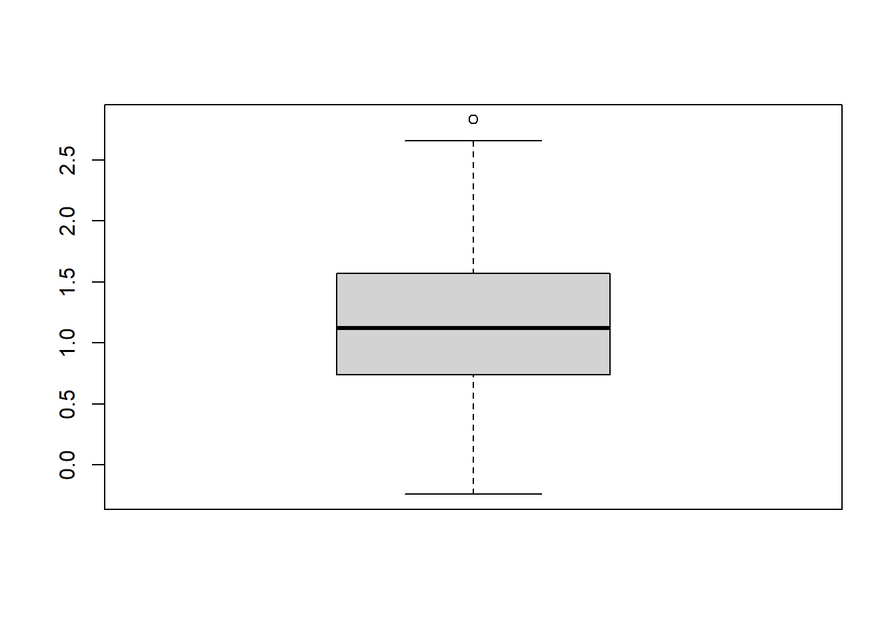
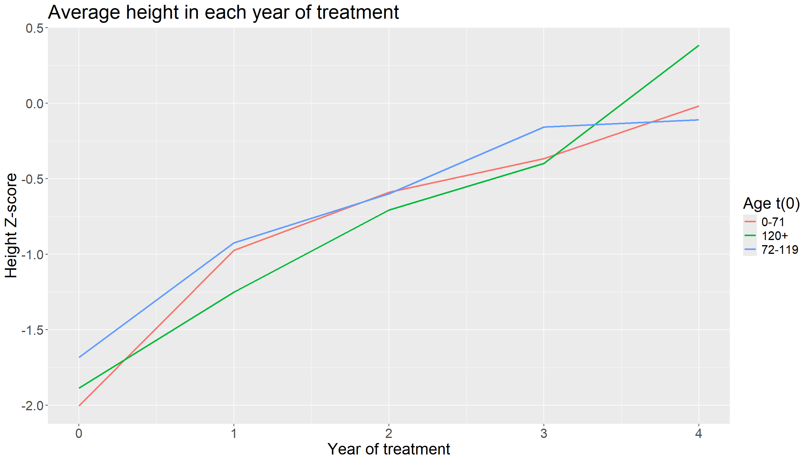
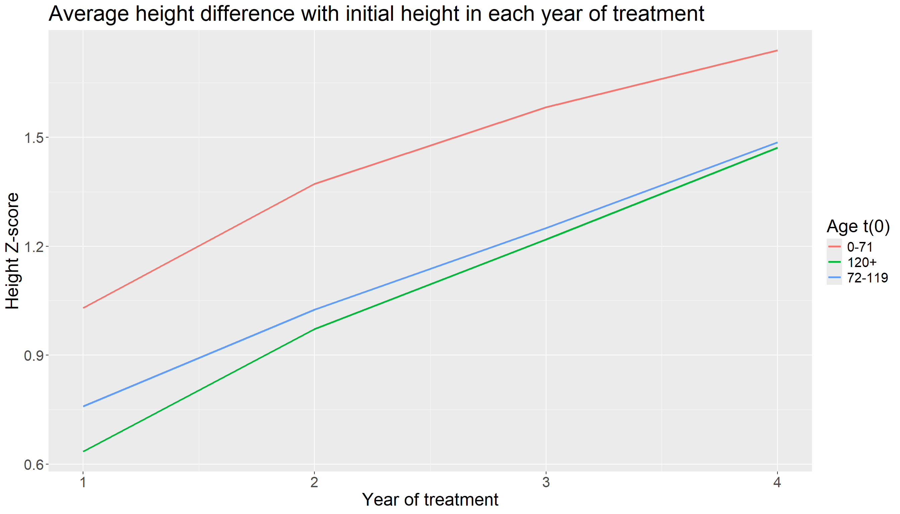
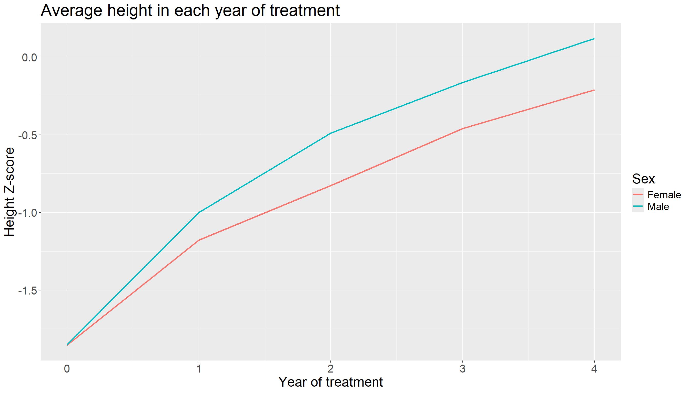
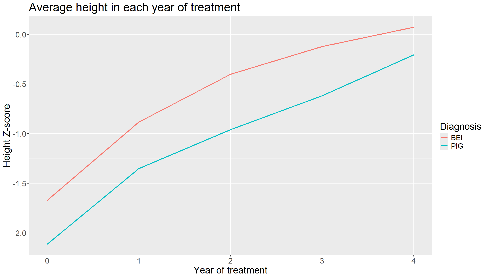
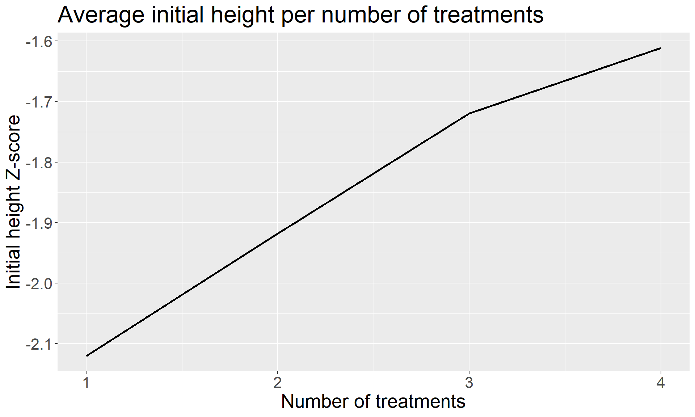
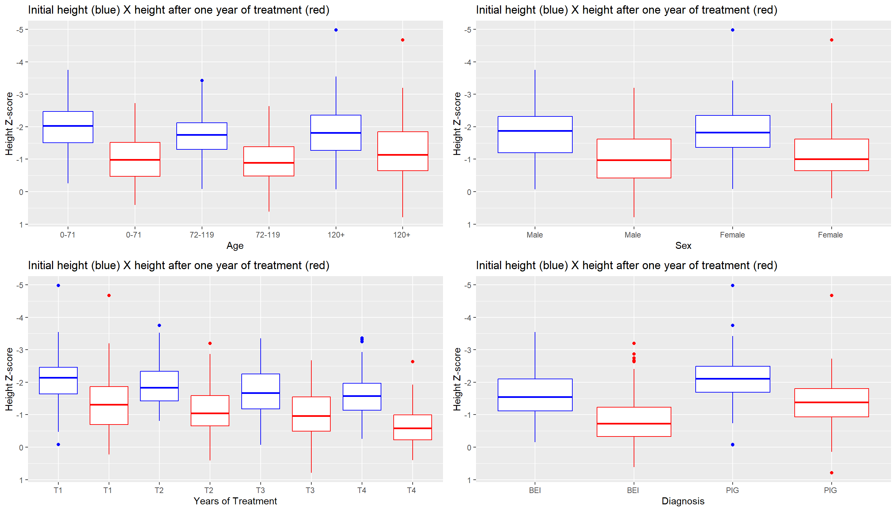
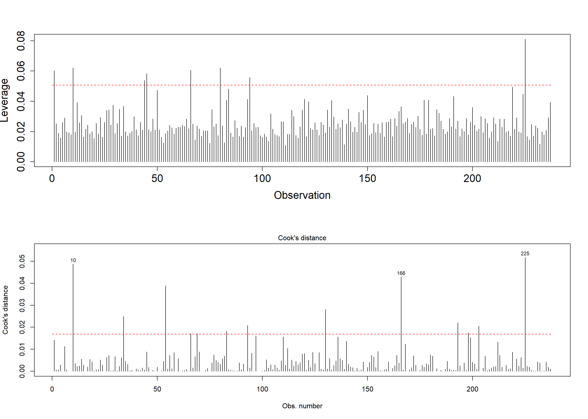
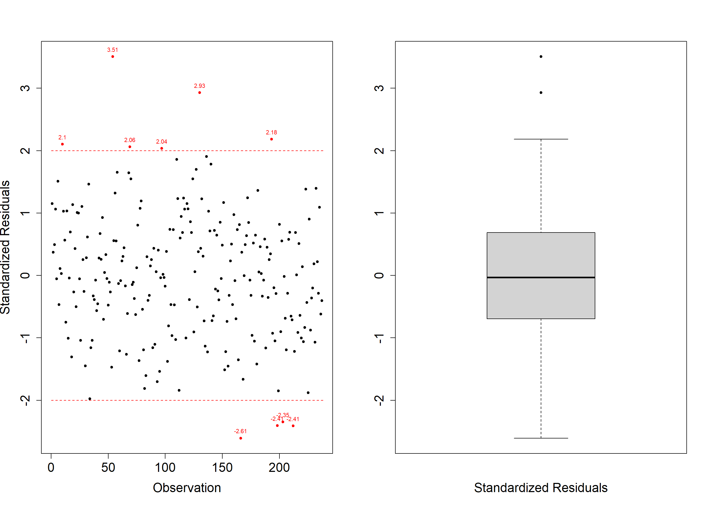

The client for this project approached me with a request to analyze data from the SUS (Unified Health System) to support her master’s thesis in pharmacy. Due to the pandemic and personal challenges, this project had been put on hold for two years, necessitating the hiring of a data scientist.
The data pertain to a growth hormone injection treatment provided by the government for children with idiopathic short stature (ISS) and those small for gestational age (SGA). The treatment involves administering four injections over four years (one per year), with the child’s height being measured and compared to the average height expected for their age, as defined by the World Health Organization (WHO).
The initial goal was to replicate the data on height evolution according to the injections using official WHO data. However, despite being a census study, the cohort for the study was small. Consequently, after conducting descriptive analyses and studies, a linear regression model was developed using two created indicators.
The final conclusions were not included in this document, as this study also served as a basis for potential changes in hormone treatment policy. The purpose of this document is to present the exploratory analysis and outline how the studies were defined.
The raw database contains 22 variables; however, after analysis, 8 of these will be used. The variables included in the analysis are sex, diagnosis (ISS or SGA), age at the beginning of treatment, height at the beginning of treatment, height after 1 year of treatment, height after 2 years of treatment, height after 3 years of treatment, and height after 4 years of treatment. The height data is represented as a Z-score, indicating the deviation from each child’s ideal height (with 0 being the ideal Z-score). This calculation was performed using WHO software.
library(data.table)
library(readxl)
dataset <- as.data.table(read_excel("PLANILHA.xlsx"))
dataset <- dataset[, c("SEXO", "ID_DIAG", "IDADE_INÍCIO", "HAZ_INÍCIO",
"HAZ_1ANOS", "HAZ_2ANOS", "HAZ_3ANOS", "HAZ_4ANOS")]
tail(dataset)## SEXO ID_DIAG IDADE_INÍCIO HAZ_INÍCIO HAZ_1ANOS HAZ_2ANOS HAZ_3ANOS
## <num> <char> <num> <num> <num> <num> <num>
## 1: 1 BEI 145 -1.63 -0.65 0.03 NA
## 2: 0 PIG 99 -2.90 -1.94 -1.74 NA
## 3: 1 BEI 58 -1.39 -0.09 0.05 0.04
## 4: 1 BEI 137 -1.24 -0.02 NA NA
## 5: 1 PIG 170 -2.24 -1.84 NA NA
## 6: 0 BEI 136 -3.14 -2.63 -2.12 -1.93
## HAZ_4ANOS
## <num>
## 1: NA
## 2: NA
## 3: NA
## 4: NA
## 5: NA
## 6: NAWe have 237 children in the dataset, but as we can see, some of the children did not complete the entire treatment, but all of them at least received the first dose of the hormone.
Table of variables:
| Variable | Description |
|--------------|---------------------------------------------|
| SEXO | Sex; (1) male, (0) female |
| ID_DIAG | Diagnosis; BEI, PIG (ISS and SGA) |
| IDADE_INÍCIO | Age in mounths at start of treatment |
| HAZ_INÍCIO | Height in zscore at the start of treatment |
| HAZ_1ANOS | Height in zscore after 1 year of treatment |
| HAZ_2ANOS | Height in zscore after 2 years of treatment |
| HAZ_3ANOS | Height in zscore after 3 years of treatment |
| HAZ_4ANOS | Height in zscore after 4 years of treatment |Before starting the descriptive analysis, it was necessary to create categorical variables for gender and age. Due to the absence of an explanatory variable for the regression model, two additional indicator variables were created: “treatment” (tratamento) and “difference” (diferenca).
The “difference” variable was created to serve as the response variable in the regression model. This variable represents the difference between the child’s initial height, recorded before the start of treatment, and the most recent height available after the start of treatment.
The “treatment” variable was assigned discrete values of 1, 2, 3, and 4, where “1” represents the completion of a single treatment cycle, “2” denotes the completion of two cycles, and so on up to “4”. Including the “treatment” variable as a covariate in the final model allowed us to investigate the relationship between the patients’ height evolution and their adherence to the treatment regimen.
dataset[
, `:=`(
sexo_cat = ifelse(SEXO == 1, "Male", "Female"),
grupo_idade_t0 = fcase(
IDADE_INÍCIO >= 0 & IDADE_INÍCIO < 72, "0-71",
IDADE_INÍCIO >= 72 & IDADE_INÍCIO < 120, "72-119",
IDADE_INÍCIO >= 120, "120+"
),
tratamento = fcase(
!is.na(HAZ_4ANOS), 4,
!is.na(HAZ_3ANOS) & is.na(HAZ_4ANOS), 3,
!is.na(HAZ_2ANOS) & is.na(HAZ_3ANOS) & is.na(HAZ_4ANOS), 2,
is.na(HAZ_2ANOS) & is.na(HAZ_3ANOS) & is.na(HAZ_4ANOS), 1
)
)][,
diferenca := fcase(
tratamento == 1, HAZ_1ANOS - `HAZ_INÍCIO`,
tratamento == 2, HAZ_2ANOS - `HAZ_INÍCIO`,
tratamento == 3, HAZ_3ANOS - `HAZ_INÍCIO`,
tratamento == 4, HAZ_4ANOS - `HAZ_INÍCIO`
)]#A quick analysis of the difference variable, which will be the explanatory variable of the regression model in the future
summary(dataset$diferenca)## Min. 1st Qu. Median Mean 3rd Qu. Max.
## -0.240 0.740 1.120 1.175 1.570 2.830boxplot(dataset$diferenca)
We observe that the “difference” variable includes negative values, indicating that some children experienced a decrease in height during treatment. However, most of the data points are above 0, and both the median and mean are positive, suggesting that the majority of children achieved a height greater than expected after treatment.
To make this document more dynamic and concise, we will focus on analyzing the average evolution of children’s height over the years of treatment using categorical variables and relevant graphs, leaving out tabular frequency analyses. Each graph will be followed by a brief analysis.
For the age variable, we will conduct two analyses: one measuring the average height and the other measuring the average difference from the initial height. This approach will allow us to observe the real evolution in each age group.
dataset_aux <- copy(dataset)
dataset_aux <- dataset_aux[
,
.(
media0 = mean(HAZ_INÍCIO, na.rm = TRUE),
media1 = mean(HAZ_1ANOS, na.rm = TRUE),
media2 = mean(HAZ_2ANOS, na.rm = TRUE),
media3 = mean(HAZ_3ANOS, na.rm = TRUE),
media4 = mean(HAZ_4ANOS, na.rm = TRUE)
),
by = .(grupo_idade_t0)
]
dataset_aux <- melt(dataset_aux, na.rm = FALSE, value.name = "media", id = "grupo_idade_t0")
dataset_aux[, aux := fcase(
variable == "media0", 0,
variable == "media1", 1,
variable == "media2", 2,
variable == "media3", 3,
variable == "media4", 4
)]
library(ggplot2)
ggplot(dataset_aux, aes(x = aux, y = media, colour = grupo_idade_t0)) +
geom_line(linewidth = 1) +
theme(legend.text = element_text(size = 15), legend.title = element_text(size = 20), text = element_text(size = 20)) +
labs(title = "Average height in each year of treatment",
y = "Height Z-score",
x = "Year of treatment") +
guides(color = guide_legend(title = "Age t(0)"))
dataset_aux <- copy(dataset)
dataset_aux <- dataset_aux[
,
.(
media1 = mean(HAZ_1ANOS - HAZ_INÍCIO, na.rm = TRUE),
media2 = mean(HAZ_2ANOS - HAZ_INÍCIO, na.rm = TRUE),
media3 = mean(HAZ_3ANOS - HAZ_INÍCIO, na.rm = TRUE),
media4 = mean(HAZ_4ANOS - HAZ_INÍCIO, na.rm = TRUE)
),
by = .(grupo_idade_t0)
]
dataset_aux <- melt(dataset_aux, na.rm = FALSE, value.name = "media", id = "grupo_idade_t0")
dataset_aux[, aux := fcase(
variable == "media1", 1,
variable == "media2", 2,
variable == "media3", 3,
variable == "media4", 4
)]
library(ggplot2)
ggplot(dataset_aux, aes(x = aux, y = media, colour = grupo_idade_t0)) +
geom_line(linewidth = 1) +
theme(legend.text = element_text(size = 15), legend.title = element_text(size = 20), text = element_text(size = 20)) +
labs(title = "Average height difference with initial height in each year of treatment",
y = "Height Z-score",
x = "Year of treatment") +
guides(color = guide_legend(title = "Age t(0)")) Simply using the height graph does not reveal which age group had the greatest adherence to the treatment. By analyzing the “difference” variable, we observe that the group aged 0 to 71 months shows a better difference and evolution compared to the initial stage of treatment.
dataset_aux <- copy(dataset)
dataset_aux <- dataset_aux[
,
.(
media0 = mean(HAZ_INÍCIO, na.rm = TRUE),
media1 = mean(HAZ_1ANOS, na.rm = TRUE),
media2 = mean(HAZ_2ANOS, na.rm = TRUE),
media3 = mean(HAZ_3ANOS, na.rm = TRUE),
media4 = mean(HAZ_4ANOS, na.rm = TRUE)
),
by = .(sexo_cat)
]
dataset_aux <- melt(dataset_aux, na.rm = FALSE, value.name = "media", id = "sexo_cat")
dataset_aux[, aux := fcase(
variable == "media0", 0,
variable == "media1", 1,
variable == "media2", 2,
variable == "media3", 3,
variable == "media4", 4
)]
library(ggplot2)
ggplot(dataset_aux, aes(x = aux, y = media, colour = sexo_cat)) +
geom_line(linewidth = 1) +
theme(legend.text = element_text(size = 15), legend.title = element_text(size = 20), text = element_text(size = 20)) +
labs(title = "Average height in each year of treatment",
y = "Height Z-score",
x = "Year of treatment") +
guides(color = guide_legend(title = "Sex")) We observed that both sexes had similar average initial heights, but males showed a better response after 1 year of treatment.
dataset_aux <- copy(dataset)
dataset_aux <- dataset_aux[
,
.(
media0 = mean(HAZ_INÍCIO, na.rm = TRUE),
media1 = mean(HAZ_1ANOS, na.rm = TRUE),
media2 = mean(HAZ_2ANOS, na.rm = TRUE),
media3 = mean(HAZ_3ANOS, na.rm = TRUE),
media4 = mean(HAZ_4ANOS, na.rm = TRUE)
),
by = .(ID_DIAG)
]
dataset_aux <- melt(dataset_aux, na.rm = FALSE, value.name = "media", id = "ID_DIAG")
dataset_aux[, aux := fcase(
variable == "media0", 0,
variable == "media1", 1,
variable == "media2", 2,
variable == "media3", 3,
variable == "media4", 4
)]
library(ggplot2)
ggplot(dataset_aux, aes(x = aux, y = media, colour = ID_DIAG)) +
geom_line(linewidth = 1) +
theme(legend.text = element_text(size = 15), legend.title = element_text(size = 20), text = element_text(size = 20)) +
labs(title = "Average height in each year of treatment",
y = "Height Z-score",
x = "Year of treatment") +
guides(color = guide_legend(title = "Diagnosis")) We observed that children diagnosed with BEI initially had better values, but both BEI and PIG groups showed similar evolution patterns.
A separate analysis was conducted for the treatment variable, where we examined its relationship with the average initial height at the beginning of treatment.
dataset_aux <- copy(dataset)
dataset_aux <- dataset_aux[
,
.(
media = mean(HAZ_INÍCIO, na.rm = TRUE)
),
by = .(tratamento)
]
ggplot(dataset_aux, aes(x = tratamento, y = media)) +
geom_line(linewidth = 1) +
theme(legend.text = element_text(size = 15), legend.title = element_text(size = 20), text = element_text(size = 20)) +
labs(title = "Average initial height per number of treatments",
y = "Initial height Z-score",
x = "Number of treatments") The analysis of this graph reveals that, interestingly, children with better initial height values tended to continue the treatment for a longer duration.
We observed that across all evolution graphs, the difference in height during the first year is the most significant. Consequently, the next graph will present a boxplot comparing initial height with height after 1 year of treatment.
#Age group
dataset_aux <- copy(dataset)
dataset_aux1 <- dataset_aux[, c("HAZ_INÍCIO", "grupo_idade_t0")][, cor := "blue"]
dataset_aux2 <- dataset_aux[, c("HAZ_1ANOS", "grupo_idade_t0")][, cor := "red"]
dataset_aux2[, grupo_idade_t0 := fcase(
grupo_idade_t0 == "0-71", "0-71 ",
grupo_idade_t0 == "72-119", "72-119 ",
grupo_idade_t0 == "120+", "120+ "
)]
names(dataset_aux1) <- c("variavel", "grupo_idade_t0", "cor")
names(dataset_aux2) <- c("variavel", "grupo_idade_t0", "cor")
dataset_aux3 <- rbind(dataset_aux1, dataset_aux2)
dataset_aux3[, grupo_idade_t0 :=
factor(grupo_idade_t0,
levels = c("0-71", "0-71 ", "72-119", "72-119 ", "120+", "120+ "))]
b1 <- ggplot(data = dataset_aux3, aes(x = grupo_idade_t0, y = variavel, color = cor)) +
geom_boxplot() +
scale_color_identity() +
labs(y = 'Height Z-score',
x = "Age",
title = "Initial height (blue) X height after one year of treatment (red)") +
scale_y_reverse()
#SEX
dataset_aux1 <- dataset_aux[, c("HAZ_INÍCIO", "sexo_cat")][, cor := "blue"]
dataset_aux2 <- dataset_aux[, c("HAZ_1ANOS", "sexo_cat")][, cor := "red"]
dataset_aux2[, sexo_cat := fcase(
sexo_cat == "Male", "Male ",
sexo_cat == "Female", "Female "
)]
names(dataset_aux1) <- c("variavel", "sexo_cat", "cor")
names(dataset_aux2) <- c("variavel", "sexo_cat", "cor")
dataset_aux3 <- rbind(dataset_aux1, dataset_aux2)
dataset_aux3[, sexo_cat :=
factor(sexo_cat,
levels = c("Male", "Male ", "Female", "Female "))]
b2 <- ggplot(data = dataset_aux3, aes(x = sexo_cat, y = variavel, color = cor)) +
geom_boxplot() +
scale_color_identity() +
labs(y = 'Height Z-score',
x = "Sex",
title = "Initial height (blue) X height after one year of treatment (red)") +
scale_y_reverse()
#TREATMENT
dataset_aux1 <- dataset_aux[, c("HAZ_INÍCIO", "tratamento")][, cor := "blue"][, tratamento := as.character(tratamento)]
dataset_aux1[, tratamento := fcase(tratamento == "1", "T1", tratamento == "2", "T2", tratamento == "3", "T3", tratamento == "4", "T4")]
dataset_aux2 <- dataset_aux[, c("HAZ_1ANOS", "tratamento")][, cor := "red"][, tratamento := as.character(tratamento)]
dataset_aux2[, tratamento := fcase(tratamento == "1", "T1", tratamento == "2", "T2", tratamento == "3", "T3", tratamento == "4", "T4")]
dataset_aux2[, tratamento := fcase(
tratamento == "T1", "T1 ",
tratamento == "T2", "T2 ",
tratamento == "T3", "T3 ",
tratamento == "T4", "T4 "
)]
names(dataset_aux1) <- c("variavel", "tratamento", "cor")
names(dataset_aux2) <- c("variavel", "tratamento", "cor")
dataset_aux3 <- rbind(dataset_aux1, dataset_aux2)
dataset_aux3[, tratamento :=
factor(tratamento,
levels = c("T1", "T1 ", "T2", "T2 ","T3", "T3 ","T4", "T4 "))]
b3 <- ggplot(data = dataset_aux3, aes(x = tratamento, y = variavel, color = cor)) +
geom_boxplot() +
scale_color_identity() +
labs(y = 'Height Z-score',
x = "Years of Treatment",
title = "Initial height (blue) X height after one year of treatment (red)") +
scale_y_reverse()
#DIAGNOSIS
dataset_aux1 <- dataset_aux[, c("HAZ_INÍCIO", "ID_DIAG")][, cor := "blue"]
dataset_aux2 <- dataset_aux[, c("HAZ_1ANOS", "ID_DIAG")][, cor := "red"]
dataset_aux2[, ID_DIAG := fcase(
ID_DIAG == "BEI", "BEI ",
ID_DIAG == "PIG", "PIG "
)]
names(dataset_aux1) <- c("variavel", "ID_DIAG", "cor")
names(dataset_aux2) <- c("variavel", "ID_DIAG", "cor")
dataset_aux3 <- rbind(dataset_aux1, dataset_aux2)
dataset_aux3[, ID_DIAG :=
factor(ID_DIAG,
levels = c("BEI", "BEI ","PIG", "PIG "))]
b4 <- ggplot(data = dataset_aux3, aes(x = ID_DIAG, y = variavel, color = cor)) +
geom_boxplot() +
scale_color_identity() +
labs(y = 'Height Z-score',
x = "Diagnosis",
title = "Initial height (blue) X height after one year of treatment (red)") +
scale_y_reverse()
library(gridExtra)
grid.arrange(b1, b2, b3, b4, ncol = 2)
#Cleaning the environment
rm(dataset_aux, dataset_aux1, dataset_aux2, dataset_aux3, b1, b2, b3, b4)
invisible(gc())We observed that the age group 0 to 71 months showed the most significant improvement. Regarding sex, differences were not evident in the boxplots. In terms of treatment duration, children who underwent 4 years of treatment exhibited the greatest initial difference in the first year. For diagnosis differences were not evident.
To assess whether the average heights are significantly different after one year of treatment, we will conduct paired t-tests for each boxplot. However, before applying the test, one of the assumptions is that the data (z-score heights) are normally distributed. To confirm the normality of the data, we will conduct four different normality tests. The paired t-test involves the following hypotheses:
\(H_0 =\) The means of the two groups are equal.
\(H_1 =\) The means of the two groups are different.
For the normality tests below the hypotheses are:
\(H_0 =\) The data follows a normal distribution.
\(H_1 =\) The data does not follow a normal distribution.
haz_in <- dataset$HAZ_INÍCIO
haz_1 <- dataset$HAZ_1ANOS
test <- cbind(haz_in, haz_1)
library(nortest)
t1 <- ks.test(test,"pnorm", mean=mean(test), sd=sd(test)) # KS
t2 <- lillie.test(test) # Lilliefors
t3 <- cvm.test(test) # Cramer-von Mises
t4 <- ad.test(test) # Anderson-Darling
# Result Table
testes <- c(t1$method, t2$method, t3$method, t4$method)
estt <- as.numeric(c(t1$statistic, t2$statistic, t3$statistic, t4$statistic))
pvalue <- c(t1$p.value, t2$p.value, t3$p.value, t4$p.value)
results <- cbind(estt, pvalue)
rownames(results) <- testes
colnames(results) <- c("Statistics", "p-value")
print(results, digits = 4)## Statistics p-value
## Asymptotic one-sample Kolmogorov-Smirnov test 0.03472 0.6172
## Lilliefors (Kolmogorov-Smirnov) normality test 0.03472 0.1787
## Cramer-von Mises normality test 0.07979 0.2080
## Anderson-Darling normality test 0.54168 0.1636All tests indicate that there is insufficient evidence to reject the null hypothesis that the data follow a normal distribution. Therefore, based on these results, we can conclude that the data meet the assumption of normality.
t071 <- t.test(dataset[grupo_idade_t0 == "0-71", "HAZ_INÍCIO"],
dataset[grupo_idade_t0 == "0-71", "HAZ_1ANOS"])
t72119 <- t.test(dataset[grupo_idade_t0 == "72-119", "HAZ_INÍCIO"],
dataset[grupo_idade_t0 == "72-119", "HAZ_1ANOS"])
t120 <- t.test(dataset[grupo_idade_t0 == "120+", "HAZ_INÍCIO"],
dataset[grupo_idade_t0 == "120+", "HAZ_1ANOS"])
group <- c("0 to 71", "72 to 119", "120+")
ci1 <- as.numeric(c(t071$conf.int[1], t72119$conf.int[1], t120$conf.int[1]))
ci2 <- as.numeric(c(t071$conf.int[2], t72119$conf.int[2], t120$conf.int[2]))
pvalue <- c(t071$p.value, t72119$p.value, t120$p.value)
results <- cbind(ci1, ci2, pvalue)
rownames(results) <- paste0("t-test age ", group)
colnames(results) <- c("ci_lower", "ci_upper", "p-value")
print(results, digits = 4)## ci_lower ci_upper p-value
## t-test age 0 to 71 -1.2860 -0.7747 8.582e-13
## t-test age 72 to 119 -0.9820 -0.5369 3.273e-10
## t-test age 120+ -0.8752 -0.3934 5.174e-07male <- t.test(dataset[sexo_cat == "Male", "HAZ_INÍCIO"],
dataset[sexo_cat == "Male", "HAZ_1ANOS"])
female <- t.test(dataset[sexo_cat == "Female", "HAZ_INÍCIO"],
dataset[sexo_cat == "Female", "HAZ_1ANOS"])
group <- c("male", "female")
ci1 <- as.numeric(c(male$conf.int[1], female$conf.int[1]))
ci2 <- as.numeric(c(male$conf.int[2], female$conf.int[2]))
pvalue <- c(male$p.value, female$p.value)
results <- cbind(ci1, ci2, pvalue)
rownames(results) <- paste0("t-test for ", group)
colnames(results) <- c("ci_lower", "ci_upper", "p-value")
print(results, digits = 4)## ci_lower ci_upper p-value
## t-test for male -1.0415 -0.6633 9.457e-17
## t-test for female -0.8901 -0.4642 2.239e-09bei <- t.test(dataset[ID_DIAG == "BEI", "HAZ_INÍCIO"],
dataset[ID_DIAG == "BEI", "HAZ_1ANOS"])
pig <- t.test(dataset[ID_DIAG == "PIG", "HAZ_INÍCIO"],
dataset[ID_DIAG == "PIG", "HAZ_1ANOS"])
group <- c("bei", "pig")
ci1 <- as.numeric(c(bei$conf.int[1], pig$conf.int[1]))
ci2 <- as.numeric(c(bei$conf.int[2], pig$conf.int[2]))
pvalue <- c(bei$p.value, pig$p.value)
results <- cbind(ci1, ci2, pvalue)
rownames(results) <- paste0("t-test for ", group)
colnames(results) <- c("ci_lower", "ci_upper", "p-value")
print(results, digits = 4)## ci_lower ci_upper p-value
## t-test for bei -0.9743 -0.6076 1.248e-15
## t-test for pig -0.9633 -0.5612 2.633e-12t1 <- t.test(dataset[tratamento == 1, "HAZ_INÍCIO"],
dataset[tratamento == 1, "HAZ_1ANOS"])
t2 <- t.test(dataset[tratamento == 2, "HAZ_INÍCIO"],
dataset[tratamento == 2, "HAZ_1ANOS"])
t3 <- t.test(dataset[tratamento == 3, "HAZ_INÍCIO"],
dataset[tratamento == 3, "HAZ_1ANOS"])
t4 <- t.test(dataset[tratamento == 4, "HAZ_INÍCIO"],
dataset[tratamento == 4, "HAZ_1ANOS"])
group <- c("1yrs treatment", "2yrs treatment", "3yrs treatment", "4yrs treatment")
ci1 <- as.numeric(c(t1$conf.int[1], t2$conf.int[1], t3$conf.int[1], t4$conf.int[1]))
ci2 <- as.numeric(c(t1$conf.int[2], t2$conf.int[2], t3$conf.int[2], t4$conf.int[2]))
pvalue <- c(t1$p.value, t2$p.value, t3$p.value, t4$p.value)
results <- cbind(ci1, ci2, pvalue)
rownames(results) <- paste0("t-test for ", group)
colnames(results) <- c("ci_lower", "ci_upper", "p-value")
print(results, digits = 4)## ci_lower ci_upper p-value
## t-test for 1yrs treatment -1.0347 -0.4453 2.187e-06
## t-test for 2yrs treatment -0.9955 -0.4916 4.413e-08
## t-test for 3yrs treatment -0.9920 -0.4014 8.152e-06
## t-test for 4yrs treatment -1.1978 -0.7110 5.478e-12We observe that for all variable groups, the confidence intervals of the tests do not contain zero, indicating a significant difference between the mean heights at the beginning and after 1 year of treatment. The p-values for all groups are extremely small, suggesting a statistically significant difference and indicating a significant increase in height across all groups. Particularly, the age group 0 to 71 months had the lowest p-value among the age groups, and this trend applies similarly to males, those with a BEI diagnosis, and those who underwent 4 years of treatment.
#Cleaning the environment
rm(results, pvalue, ci2, ci1, group, t4, t3, t2, t1, pig, bei, female,
male, t120, t72119, t071, estt, testes, test, haz_1, haz_in)
invisible(gc())After the descriptive analyses, graphs and tests, we will move on to the second part of this project, which is modeling. I’ll be brief so this page doesn’t get too big (it’s already huge).
After carrying out tests with all variables and interactions between them, the final model was defined as:
#To help interpret the model, the variable age in months was transformed into age in years.
dataset[, `IDADE_INÍCIO` := `IDADE_INÍCIO`/12]
fit <- lm(diferenca ~ tratamento + HAZ_INÍCIO + `IDADE_INÍCIO` + SEXO + ID_DIAG, data = dataset)
summary(fit)##
## Call:
## lm(formula = diferenca ~ tratamento + HAZ_INÍCIO + IDADE_INÍCIO +
## SEXO + ID_DIAG, data = dataset)
##
## Residuals:
## Min 1Q Median 3Q Max
## -1.13986 -0.30675 -0.01432 0.30083 1.54778
##
## Coefficients:
## Estimate Std. Error t value Pr(>|t|)
## (Intercept) 0.477699 0.176087 2.713 0.00717 **
## tratamento 0.254714 0.030810 8.267 1.08e-14 ***
## HAZ_INÍCIO -0.197996 0.040437 -4.896 1.83e-06 ***
## IDADE_INÍCIO -0.042164 0.009691 -4.351 2.04e-05 ***
## SEXO 0.242183 0.059417 4.076 6.30e-05 ***
## ID_DIAGPIG -0.149874 0.064551 -2.322 0.02111 *
## ---
## Signif. codes: 0 '***' 0.001 '**' 0.01 '*' 0.05 '.' 0.1 ' ' 1
##
## Residual standard error: 0.4455 on 231 degrees of freedom
## Multiple R-squared: 0.4383, Adjusted R-squared: 0.4261
## F-statistic: 36.05 on 5 and 231 DF, p-value: < 2.2e-16In the model above, all coefficients are significant at the 95% confidence level. The coefficient of determination, R², is a crucial measure of model quality, indicating the proportion of variability in the response variable explained by the independent variables. Here, R² is 0.4261, suggesting that approximately 42.61% of the variability in the ‘difference’ variable is explained by the included independent variables.
While 42.61% may seem relatively low, it’s important to note that the data are in z-scores, which inherently limit variability. When the model was tested using height variables in centimeters, an R² greater than 0.8 was achieved. However, z-scores were chosen to standardize the evolution of child height and avoid large differences between groups.
Additionally, the residual standard error is low at 0.4455, and the F-statistic has an extremely low p-value, indicating that the model significantly outperforms a model without predictors.
# The confidence interval of the coefficients
confint(fit)## 2.5 % 97.5 %
## (Intercept) 0.13075686 0.82464063
## tratamento 0.19400957 0.31541844
## HAZ_INÍCIO -0.27766744 -0.11832377
## IDADE_INÍCIO -0.06125781 -0.02307043
## SEXO 0.12511481 0.35925185
## ID_DIAGPIG -0.27705743 -0.02269063The 95% confidence intervals for the coefficient estimates are reliable, as none of them include the number 0. This indicates that these predictors robustly explain the variation in the dependent variable.
Now, to confirm the veracity of the chosen model, we will study the assumptions necessary for its validation.
car::vif(fit)## tratamento HAZ_INÍCIO IDADE_INÍCIO SEXO ID_DIAG
## 1.397790 1.154201 1.392548 1.025447 1.203038The VIF (Variance Inflation Factor) results indicate the extent to which the variance of a regression coefficient is inflated due to collinearity with other independent variables in the model. For a model to be acceptable, the VIF should be less than 5. As observed, all variables have a VIF below 2, confirming that there is no significant multicollinearity among the predictor variables in this model.
# Number of observations
n <- nrow(dataset)
#Number of coeficients
k <- length(fit$coef)
#Leverage cut
corte.hii<- 2*k/n
#Cookis distance cut
corte.cook<- 4/n
par(mfrow = c(2, 1))
plot(hatvalues(fit), type = "h", cex.lab = 1.5, cex.axis = 1.5,
xlab = "Observation", ylab = "Leverage",
ylim = c(0, max(max(hatvalues(fit)), corte.hii)))
lines(c(0, n + 1), c(corte.hii, corte.hii), col = 'red', lty = 2)
plot(fit, which = 4)
lines(c(0, n + 1), c(corte.cook, corte.cook), col = 'red', lty = 2)
# Higher Leverages
hatv <- order(hatvalues(fit),decreasing=TRUE)[1:10]
hatv## [1] 225 80 10 66 1 45 94 44 219 84# Higher Cooks Distance
cooks <- order(cooks.distance(fit),decreasing=TRUE)[1:10]
cooks## [1] 225 10 166 54 130 34 193 93 203 83#Higher leveragens and cook distance at the same time
critic_points <- Reduce(intersect, list(hatv, cooks))
critic_points## [1] 225 10We can see that among the 10 largest leverage and cook distance points, only 2 coexist in both groups. The recommended option is to remove these points, but after running the model without these two points, the best difference between them was the increase in R² to 0.4313. Therefore, it was decided to keep the 2 points in the model, considering that the data is reliable and they are probably legitimate outliers.
Now continuing the verification of the model assumptions we have.
#Standardized Residuals
sr<- rstandard(fit)
par(mfrow = c(1, 2))
plot(sr, pch = 20, cex.lab = 1.5, cex.axis = 1.5,
xlab = "Observation", ylab = "Standardized Residuals",
ylim = c(min(-2, min(sr)), max(2, max(sr))))
lines(c(0, n + 1), c(2, 2), col = 'red', lty = 2)
lines(c(0, n + 1), c(-2, -2), col = 'red', lty = 2)
high_residuals <- which(abs(sr) > 2)
points(high_residuals, sr[high_residuals], col = "red", pch = 20)
text(high_residuals, sr[high_residuals], labels = round(sr[high_residuals], 2),
pos = 3, col = "red", cex = 0.7)
boxplot(sr, pch = 20, cex.lab = 1.5, cex.axis = 1.5, xlab = "Standardized Residuals") The residuals are evenly distributed around 0, as observed in the boxplot where the median is very close to 0, and the distribution is well-balanced. There are only 10 points outside the range of -2 to 2, indicating very good residual values.
Next, we will perform a normality test to finalize the residual analysis.
t1 <- ks.test(sr,"pnorm") # KS
t2 <- lillie.test(sr) # Lilliefors
t3 <- cvm.test(sr) # Cramer-von Mises
t4 <- shapiro.test(sr) # Shapiro-Wilk
t5 <- sf.test(sr) # Shapiro-Francia
t6 <- ad.test(sr) # Anderson-Darling
# Tabela de resultados
testes <- c(t1$method, t2$method, t3$method, t4$method, t5$method, t6$method)
estt <- as.numeric(c(t1$statistic, t2$statistic, t3$statistic, t4$statistic, t5$statistic, t6$statistic))
valorp <- c(t1$p.value, t2$p.value, t3$p.value, t4$p.value, t5$p.value, t6$p.value)
resultados <- cbind(estt, valorp)
rownames(resultados) <- testes
colnames(resultados) <- c("Statistic", "p-value")
print(resultados, digits = 4)## Statistic p-value
## Asymptotic one-sample Kolmogorov-Smirnov test 0.02766 0.9935
## Lilliefors (Kolmogorov-Smirnov) normality test 0.02716 0.9401
## Cramer-von Mises normality test 0.02177 0.9504
## Shapiro-Wilk normality test 0.99578 0.7664
## Shapiro-Francia normality test 0.99511 0.5689
## Anderson-Darling normality test 0.16817 0.9355All six tests indicate that there is insufficient evidence to reject the null hypothesis that the residuals follow a normal distribution. Therefore, we conclude that the residuals meet the assumption of normality.
# Breusch-Pagan Test
lmtest::bptest(fit) ##
## studentized Breusch-Pagan test
##
## data: fit
## BP = 4.4489, df = 5, p-value = 0.4868The absence of heteroscedasticity in the residuals is crucial as it ensures that confidence intervals and significance tests of the regression model coefficients are correctly interpreted. With a p-value of 0.4868, there is no statistically significant evidence to reject the null hypothesis of the test indicating no heteroscedasticity in the model residuals. Therefore, we conclude that the residuals exhibit homoscedasticity.
After confirming all assumptions and validating the model, we are now ready to interpret the coefficients and infer the model. The final model is as follows:
\[Y = 0.4777 + 0.2547X_1 - 0.198X_2 - 0.0422X_3 + 0.2422X_4 - 0.1499X_5\]
| Variable | Description |
|---|---|
| Y | Difference between the child’s initial height and the most recent height available after the start of treatment. |
| X1 | Number of treatments |
| X2 | Height in zscore at the start of treatment |
| X3 | Age in years at the start of treatment |
| X4 | Sex (male) |
| X5 | Diagnosis (PIG) |
We observe that the intercept value indicates that the height difference will be 0.4777, meaning the child will grow by 0.477 in z-score, regardless of the other variables.
The “number of treatments” variable has the most significant impact on this difference. Each year of hormone treatment results in an increase of 0.2547 in the difference, which can reach up to 1.0188.
For the “initial height” variable, we interpret that the more negative the z-score, the greater the difference at the end of the treatment. In other words, the shorter the initial height of the child, the greater the final difference, with a coefficient of -0.198.
The “age” variable works similarly to initial height, but it always “worsens” the difference since age is always positive and the coefficient is negative. We conclude that the younger the child, the better the final difference, as the difference will be greater.
Regarding sex, we find that boys respond better to the treatment. Being male increases the difference by 0.2422, while for girls, this difference decreases by 0.2422.
Finally, children diagnosed as SGA (Small for Gestational Age) show a slight worsening in the difference, while those diagnosed as ISS (Idiopathic Short Stature) show an improvement.
We conclude that the ideal scenario for a child to achieve the best results is to complete the 4 years of treatment, have the lowest possible initial height z-score, start treatment at the youngest age, be male, and be diagnosed as ISS.